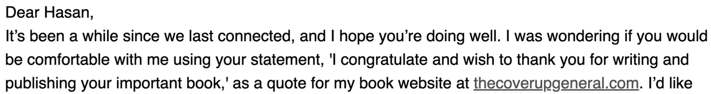
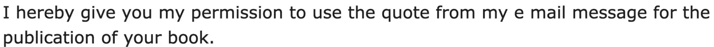

Prueba · Correo electrónico
Hasan Nuhanović a Giltay, 27 de junio de 2025
La cita figura en la solicitud que el autor envió el 24 de junio de 2025, al pie del intercambio de correos; la autorización, en la respuesta de Hasan Nuhanović del 27 de junio, encima de ella.
La cita, en la solicitud del 24 de junio de 2025
«Me preguntaba si te parecería bien que utilizara tu declaración, “Te felicito y quiero agradecerte que hayas escrito y publicado tu importante libro”, como cita para el sitio web de mi libro, thecoverupgeneral.com». Página 1, la solicitud que el autor envió el 24 de junio de 2025, al pie del intercambio de correos. Las palabras entre las comillas interiores proceden de un correo electrónico anterior de Hasan Nuhanović, como confirma su respuesta. Traducido del inglés; el texto original figura a continuación.
“I was wondering if you would be comfortable with me using your statement, ‘I congratulate and wish to thank you for writing and publishing your important book,’ as a quote for my book website at thecoverupgeneral.com.” Texto original

La autorización, 27 de junio de 2025
«Por la presente te doy mi autorización para utilizar la cita de mi mensaje de correo electrónico para la publicación de tu libro». Página 1, el texto de la respuesta, justo debajo del saludo. En el propio mensaje, «e mail» aparece escrito en dos palabras. Traducido del inglés; el texto original figura a continuación.
“I hereby give you my permission to use the quote from my e mail message for the publication of your book.” Texto original

Por qué importa este documento
Este correo electrónico del 27 de junio de 2025 es el documento en que se basa la felicitación de Hasan Nuhanović en la sección de voces. Nuhanović sobrevivió al genocidio de Srebrenica y escribió Under the UN Flag, que junto con su Zbijeg se tradujo al neerlandés como De tolk van Srebrenica. Tres días antes, Giltay le había presentado la frase palabra por palabra y le había preguntado si podía publicar esa declaración, con una pequeña foto, en el sitio web de su propio libro y atribuírsela a Nuhanović. Esta es la respuesta: autorización concedida, con buenos deseos para el libro. Las palabras elogiosas que este sitio web atribuye a Nuhanović son, por tanto, suyas y figuran en él con su aprobación por escrito.
Procedencia
- Documento
- Correo electrónico, una página, captura de pantalla de la cuenta de Gmail del destinatario
- Remitente
- Hasan Nuhanović, superviviente del genocidio de Srebrenica y autor de Under the UN Flag. El encabezado muestra su nombre visible sin signo diacrítico, como «Hasan Nuhanovic», y su dirección está tachada en este PDF
- Destinatario
- Edwin Giltay. El encabezado dice «aan mij» (a mí), porque la captura de pantalla se hizo en el buzón de correo del propio Giltay
- Fecha
- Viernes 27 de junio de 2025, 14:17
- Asunto
- «Re: Congratulations for the book» (Re: felicidades por el libro)
- En respuesta a
- El mensaje de Edwin Giltay del martes 24 de junio de 2025, 11:17:26 GMT+2, hora de los Países Bajos, citado íntegramente bajo la respuesta
- Referencias
- La declaración que Giltay quería citar, el sitio web de su libro, thecoverupgeneral.com, la pequeña foto que quería colocar junto a la cita y la atribución «Hasan Nuhanović, survivor of the Srebrenica genocide and author of Under the UN Flag» (Hasan Nuhanović, superviviente del genocidio de Srebrenica y autor de Under the UN Flag)
- Idioma
- Inglés, en una interfaz de Gmail en neerlandés
- Conservado por
- Edwin Giltay, el destinatario
- Fuente
- Captura de pantalla en dedoofpotgeneraal.
nl/ doc/ nuhanovic.pdf
Citado en: la sección de voces bajo el epígrafe «Repercusión mundial».
Ficha de prueba: https://
Documento: https://
Modificado por última vez el 13 de septiembre de 2026, consultado el 26 de noviembre de 2026.

Esta página es una ficha de prueba del libro El general del encubrimiento de Edwin Giltay y del sitio web que lo acompaña.